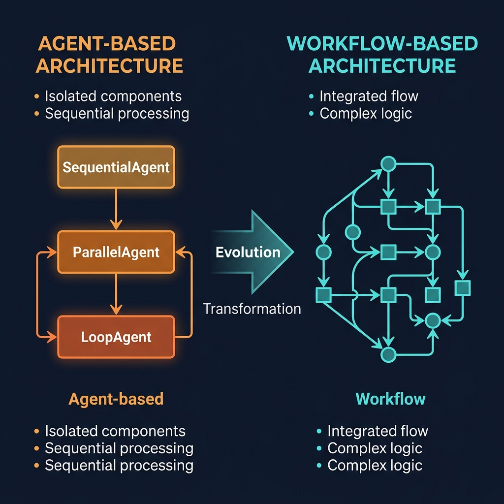
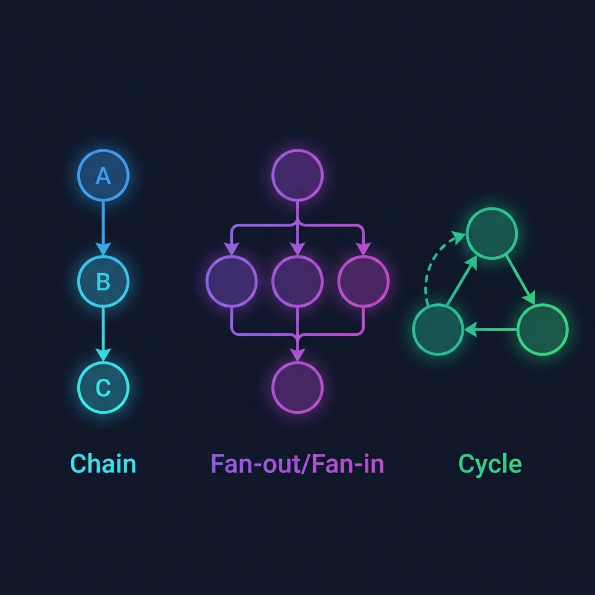

SequentialAgent・ParallelAgent・LoopAgent が統一された
Workflow API への進化を可視化

v2 では個別のオーケストレーションクラスが廃止され、宣言的なグラフ構文で全パターンを表現できるようになった
SequentialAgent(sub_agents=[a, b, c])
↓
Workflow(edges=[("START", a, b, c)])
ノードをタプルで並べるだけで直列実行を表現。エッジが暗黙的に自動生成される。
ParallelAgent(sub_agents=[a, b, c])
↓
Workflow(edges=[("START", (a, b, c), agg)])
タプルをネストすることで fan-out / fan-in パターンを宣言的に表現。
LoopAgent(sub_agents=[a, b], max_iterations=5)
↓
Workflow(edges=[("START", a, b, {"REVISE": a})])
dict で条件分岐を定義。無条件サイクルは禁止。
以下のコア API は v2 でもそのまま使用可能。既存コードの大部分はそのまま動作する
LlmAgent の基本構成は変更なし。モデル、命令、サブエージェント、ツール定義すべて互換
LlmAgent( model, instruction, output_key, sub_agents, description, tools)
Runner と InMemorySessionService の API は同じ。runner.run_async() も変更なし
Runner, InMemorySessionServicerunner.run_async()
イベントストリームの判定ロジック、コンテンツパーツ取得は互換
event.is_final_response()event.content.parts
Google 検索やコード実行のツール、ToolContext API は変更なし
google_search, code_executionToolContext
Content/Part 型定義、root_agent export パターン、CLI コマンドすべて互換
types.Content / types.Partroot_agent exportadk web / adk run
v2 でも動作するが DeprecationWarning が出る。早期移行を推奨
直列実行のオーケストレーションクラス
❌ from google.adk.agents import SequentialAgent✅ from google.adk.workflow import Workflow
並列実行のオーケストレーションクラス
❌ from google.adk.agents import ParallelAgent✅ from google.adk.workflow import Workflow
繰り返し実行のオーケストレーションクラス
❌ from google.adk.agents import LoopAgent✅ from google.adk.workflow import Workflow
グローバルな命令文の設定方法が変更
❌ global_instruction="..."✅ GlobalInstructionPlugin("...")
v2 で導入された新しいクラス・機能・デコレータ
LlmAgent の短縮エイリアス。より直感的な命名
from google.adk.agents import Agent# Agent == LlmAgent
宣言的グラフ構文で全パターンを統一するオーケストレーション API
from google.adk.workflow import Workflow# ⚠️ workflows ではなく workflow
Workflow のノードを定義するクラスとデコレータ
from google.adk.workflow import Node@node
エッジ定義、並列ノード合流、ループ脱出の制御プリミティブ
Edge, JoinNode, exit_loop
アプリケーション構成、タスクライフサイクル、静的命令の新 API
App, Task, static_instruction
失敗時の自動リトライ機構と Human-in-the-Loop のネイティブサポート
auto_retry=Truehuman_approval_required=True

3 つの Workflow 構文パターン：Chain / Fan-out・Fan-in / Conditional Cycle
各 Workflow パターンの具体的なコード変更
from google.adk.agents import SequentialAgent
root_agent = SequentialAgent(
name="etl_pipeline",
sub_agents=[
extract_agent,
transform_agent,
load_agent,
],
)from google.adk.workflow import Workflow
root_agent = Workflow(
name="etl_pipeline",
edges=[
("START", extract, transform, load),
],
)from google.adk.agents import ParallelAgent
root_agent = ParallelAgent(
name="multi_source",
sub_agents=[
web_researcher,
tech_researcher,
finance_researcher,
],
)from google.adk.workflow import Workflow
root_agent = Workflow(
name="multi_source",
edges=[
("START",
(web, tech, finance), # fan-out
aggregator), # fan-in
],
)from google.adk.agents import LoopAgent
root_agent = LoopAgent(
name="code_gen_loop",
sub_agents=[
code_generator,
code_tester,
],
max_iterations=5,
)from google.adk.workflow import Workflow
root_agent = Workflow(
name="code_gen_loop",
edges=[
("START", generator, tester,
{"FAIL": generator}), # 条件付き
],
)各デザインパターンの v1 → v2 移行内容をクリックして展開
v2 Workflow でのノード間データの流れを可視化
ノードが直列に実行され、output_key でデータを受け渡す
fan-out で並列に実行、fan-in で集約
dict エッジで条件分岐し、品質基準まで反復
| Level | パターン | v1 クラス | v2 Workflow 構文 | root_agent 型 | 変更量 | 影響度 |
|---|
全12パターンの影響度を3段階で分類
v2 移行で発見した重要な差分と回避策
v1 の LoopAgent は暗黙的にループしたが、v2 では無条件サイクルは ValidationError になる
❌ edges=[("START", a, b, (b, a))]✅ edges=[("START", a, b, {"REVISE": a})]
Workflow は BaseAgent ではなく BaseNode のサブクラス。LlmAgent の sub_agents に入れられない
❌ LlmAgent(sub_agents=[Workflow(...)])✅ Workflow(edges=[("START", coordinator, ...)])
google.adk.agents の SequentialAgent / ParallelAgent / LoopAgent は deprecated
❌ from google.adk.agents import SequentialAgent✅ from google.adk.workflow import Workflow
Code Injection + Missing Authentication。v1 の重大な脆弱性が修正済み
google-adk>=2.1.0 # 推奨: 最新 v2google-genai>=1.72.0
google.adk.workflows は存在しない。正しくは単数形
❌ from google.adk.workflows import Workflow✅ from google.adk.workflow import Workflow
Workflow は BaseAgent ではなく BaseNode のサブクラス。sub_agents パラメータに入れるとエラー
❌ LlmAgent(sub_agents=[Workflow(...)])✅ root_agent = Workflow(edges=[...])
v2 alpha/beta は PyPI staging index に公開される場合があり、uv sync でエラーになることがある
uv sync --extra-index-url ...
edges リスト内の各タプルは ("START", ...) で始まる必要がある。複数チェーンは複数タプルで表現
edges=[("START", a, b, c)]# 1タプル = 1チェーン
output_key → state_delta → session.state への反映タイミングが非同期instruction を callable にして ReadonlyContext.state.get() で動的に参照する
# instruction が定義時に評価される
instruction=f"data: {state['raw_data']}"
# → Parallel では未確定の state を参照してしまう# 実行時に動的に state を取得
instruction=lambda ctx: (
f"data: {ctx.state.get('raw_data', '')}"
)
# → 実行時点で確定済みの state を参照v2 移行で必要な依存パッケージとバージョン制約
| パッケージ | バージョン制約 | 理由 |
|---|---|---|
| google-genai | >=1.72,<2 | Workflow API の基盤。v2 API の型定義に依存 |
| fastapi | >=0.124.1 | ADK Web Server 用。Starlette 互換性 |
| pydantic | >=2.12 | モデルバリデーション。v2 の Workflow 設定に必須 |
| graphviz | >=0.20.2 | Workflow グラフの可視化（オプション） |
| opentelemetry-api | >=1.36 | トレーシング・計装のためのテレメトリ基盤 |
| opentelemetry-sdk | >=1.36 | テレメトリ SDK。api と同一バージョンが必要 |
v1 ブランチで現在のコードを保存、v2 ブランチを作成して作業開始
pyproject.toml で google-adk>=2.1.0, google-genai>=1.72.0 に更新。pytest に DeprecationWarning フィルタ追加
SequentialAgent → チェーンタプル、ParallelAgent → ネストタプル、LoopAgent → 条件付きサイクルへ一括移行
test_agent_structure.py を graph.nodes / edges ベースのアサーションに全面書き直し。50テスト全 PASS
35+ ファイルの README、SKILL.md、設計ドキュメントを v2 に更新
Dockerfile / docker-compose.yml / .env.example は pyproject.toml ベースのため変更不要と確認